8. Spring Data JPA OpenJpa
8.1. Introduction
Nous reprenons l'architecture précédente que nous implémentons maintenant avec une couche JPA / OpenJpa.
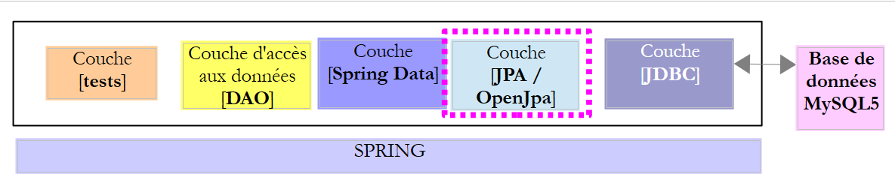 |
8.2. Mise en place de l'environnement de travail
Avec STS, déchargez le projet [myql-config-jpa-eclipselink] [1-4] :
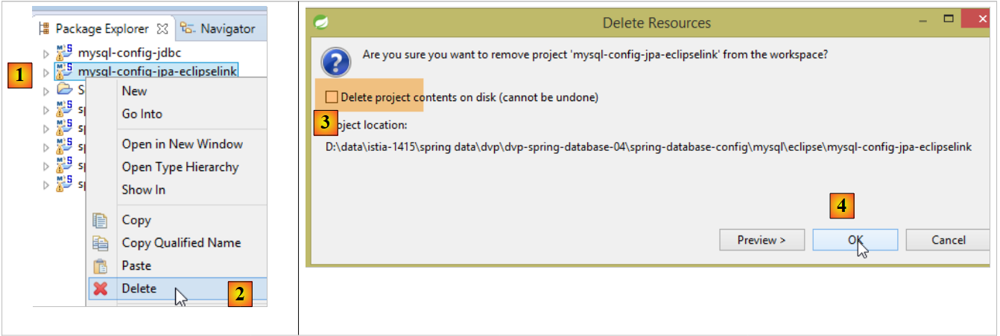 |
puis importez le projet [mysl-config-jpa-openjpa] [5] qui se trouve dans le dossier [<exemples>/spring-database-config/mysql/eclipse] [6] :
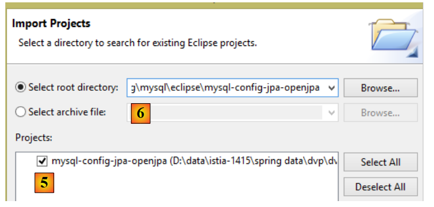 |
Ceci fait, réinitialisez l'environnement Maven (Alt-F5) de tous les projets présents dans [Package Explorer] :
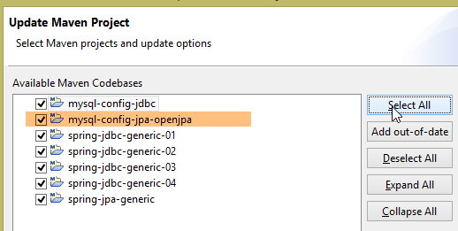 |
Puis, pour vérifier l'environnement de travail, exécutez la configuration d'exécution nommée [spring-jpa-generic-JUnitTestDao-openjpa] :
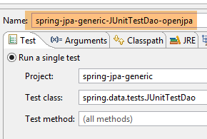 | 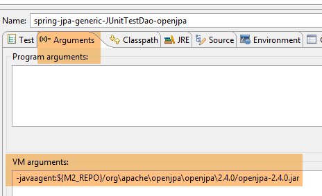 |
Cette configuration exécute le test [JUnitTestDao]. Ce test doit réussir :
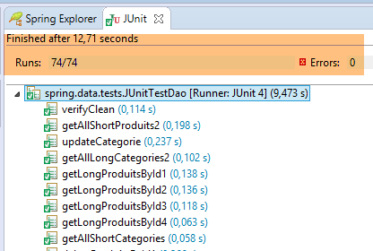 |
8.3. Le projet de configuration de la couche JPA
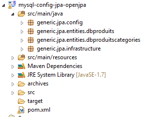 |
Ce projet a pour rôle de configurer la couche JPA de l'architecture ci-dessous :
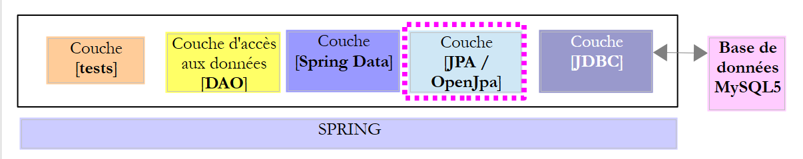 |
8.3.1. Configuration Maven
Le projet est un projet Maven est configuré par le fichier [pom.xml] suivant :
<project xsi:schemaLocation="http://maven.apache.org/POM/4.0.0 http://maven.apache.org/xsd/maven-4.0.0.xsd"
xmlns="http://maven.apache.org/POM/4.0.0" xmlns:xsi="http://www.w3.org/2001/XMLSchema-instance">
<modelVersion>4.0.0</modelVersion>
<groupId>dvp.spring.database</groupId>
<artifactId>generic-config-jpa</artifactId>
<version>0.0.1-SNAPSHOT</version>
<name>configuration mysql openjpa</name>
<parent>
<groupId>org.springframework.boot</groupId>
<artifactId>spring-boot-starter-parent</artifactId>
<version>1.2.3.RELEASE</version>
</parent>
<dependencies>
<!-- dépendances variables ********************************************** -->
<!-- JPA provider -->
<dependency>
<groupId>org.apache.openjpa</groupId>
<artifactId>openjpa</artifactId>
<version>2.3.0</version>
</dependency>
<!-- dépendances constantes ********************************************** -->
<!-- Spring Data -->
<dependency>
<groupId>org.springframework.data</groupId>
<artifactId>spring-data-jpa</artifactId>
</dependency>
<!-- configuration JDBC héritée -->
<dependency>
<groupId>dvp.spring.database</groupId>
<artifactId>generic-config-jdbc</artifactId>
<version>0.0.1-SNAPSHOT</version>
<exclusions>
<exclusion>
<groupId>org.springframework.boot</groupId>
<artifactId>spring-boot-starter-jdbc</artifactId>
</exclusion>
</exclusions>
</dependency>
</dependencies>
<properties>
<project.build.sourceEncoding>UTF-8</project.build.sourceEncoding>
<java.version>1.7</java.version>
</properties>
<build>
<plugins>
<plugin>
<groupId>org.apache.maven.plugins</groupId>
<artifactId>maven-surefire-plugin</artifactId>
<version>2.18.1</version>
</plugin>
</plugins>
</build>
</project>
- lignes 5-7 : l'artifact Maven généré par ce projet. C'est le même que celui du projet [mysql-config-jpa-hibernate]. Cela signifie qu'un seul de ces projets peut être actif à un moment donné ;
- lignes 10-14 : le projet Maven parent qui fixe la version de la plupart des dépendances nécessaires au projet ;
- lignes 19-23 : la bibliothèque OpenJpa ;
- lignes 26-29 : la bibliothèque Spring Data ;
- lignes 32-34 : le projet de configuration de la couche JPA s'appuie sur celui de configuration de la couche JDBC qui définit entre autres choses, le pilote JDBC du SGBD utilisé et les coordonnées de la base à utiliser ;
- lignes 35-40 : le projet de configuration de la couche JDBC inclut la bibliothèque [Spring JDBC] qui est ici remplacée par la bibliothèque [Spring Data JPA]. Aussi indique-t-on de ne pas l'inclure dans les dépendances du projet. Si elle reste, cela ne cause cependant pas d'erreurs ;
Au final, les dépendances sont les suivantes :
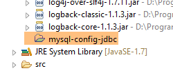 |
8.3.2. Configuration Spring
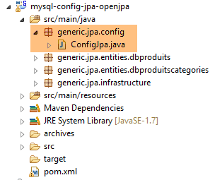 |
La classe [ConfigJpa] configure le projet Spring de la façon suivante :
package generic.jpa.config;
import generic.jdbc.config.ConfigJdbc;
import javax.persistence.EntityManagerFactory;
import org.apache.tomcat.jdbc.pool.DataSource;
import org.springframework.context.annotation.Bean;
import org.springframework.context.annotation.Configuration;
import org.springframework.context.annotation.Import;
import org.springframework.orm.jpa.JpaTransactionManager;
import org.springframework.orm.jpa.JpaVendorAdapter;
import org.springframework.orm.jpa.LocalContainerEntityManagerFactoryBean;
import org.springframework.orm.jpa.vendor.Database;
import org.springframework.orm.jpa.vendor.OpenJpaVendorAdapter;
import org.springframework.transaction.PlatformTransactionManager;
@Configuration
@Import({ConfigJdbc.class})
public class ConfigJpa {
// le provider JPA
@Bean
public JpaVendorAdapter jpaVendorAdapter() {
OpenJpaVendorAdapter openJpaVendorAdapter = new OpenJpaVendorAdapter();
openJpaVendorAdapter.setShowSql(false);
openJpaVendorAdapter.setDatabase(Database.MYSQL);
openJpaVendorAdapter.setGenerateDdl(true);
return openJpaVendorAdapter;
}
// packages des entités JPA
public final static String[] ENTITIES_PACKAGES = { "generic.jpa.entities.dbproduitscategories" };
// source de données
@Bean
public DataSource dataSource() {
// source de données TomcatJdbc
DataSource dataSource = new DataSource();
// configuration accès JDBC
dataSource.setDriverClassName(ConfigJdbc.DRIVER_CLASSNAME);
dataSource.setUsername(ConfigJdbc.USER_DBPRODUITSCATEGORIES);
dataSource.setPassword(ConfigJdbc.PASSWD_DBPRODUITSCATEGORIES);
dataSource.setUrl(ConfigJdbc.URL_DBPRODUITSCATEGORIES);
// connexions ouvertes initialement
dataSource.setInitialSize(5);
// résultat
return dataSource;
}
// EntityManagerFactory
@Bean
public EntityManagerFactory entityManagerFactory(JpaVendorAdapter jpaVendorAdapter, DataSource dataSource) {
LocalContainerEntityManagerFactoryBean factory = new LocalContainerEntityManagerFactoryBean();
factory.setJpaVendorAdapter(jpaVendorAdapter);
factory.setPackagesToScan(ENTITIES_PACKAGES);
factory.setDataSource(dataSource);
factory.afterPropertiesSet();
return factory.getObject();
}
// Transaction manager
@Bean
public PlatformTransactionManager transactionManager(EntityManagerFactory entityManagerFactory) {
JpaTransactionManager txManager = new JpaTransactionManager();
txManager.setEntityManagerFactory(entityManagerFactory);
return txManager;
}
}
Cette configuration est analogue à celle détaillée au paragraphe 6.3.2, pour l'implémentation JPA Hibernate. Nous ne détaillons que les différences :
- lignes 23-30 : le bean [jpaVendorAdapter] est désormais implémenté avec OpenJpa ;
8.4. Le fichier [persistence.xml]
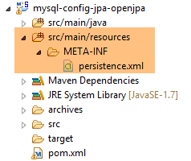 |
<?xml version="1.0" encoding="UTF-8"?>
<persistence version="1.0" xmlns="http://java.sun.com/xml/ns/persistence" xmlns:xsi="http://www.w3.org/2001/XMLSchema-instance"
xsi:schemaLocation="http://java.sun.com/xml/ns/persistence http://java.sun.com/xml/ns/persistence/persistence_1_0.xsd">
<persistence-unit name="generic-jpa-entities-dbproduitscategories" transaction-type="RESOURCE_LOCAL">
<!-- entités JPA -->
<class>generic.jpa.entities.dbproduitscategories.Categorie</class>
<class>generic.jpa.entities.dbproduitscategories.Produit</class>
<class>generic.jpa.entities.dbproduitscategories.User</class>
<class>generic.jpa.entities.dbproduitscategories.Role</class>
<class>generic.jpa.entities.dbproduitscategories.UserRole</class>
<exclude-unlisted-classes />
</persistence-unit>
<persistence-unit name="generic-jpa-entities-dbproduits" transaction-type="RESOURCE_LOCAL">
<!-- entités JPA -->
<class>generic.jpa.entities.dbproduits.Produit</class>
<exclude-unlisted-classes />
</persistence-unit>
</persistence>
- ligne 4 : l'unité de persistance liée à la base [dbproduitscategories]. Elle peut porter un nom quelconque (attribut name) ;
- lignes 6-10 : les cinq entités JPA à gérer ;
- lignes 13-17 : une autre unité de persistance liée elle à la base [dbproduits]. OpenJpa permet d'avoir un fichier de persistance avec plusieurs unités de persistance. EclipseLink ne le permet pas. On rappelle qu'avec Hibernate, on n'a pas utilisé de fichier de persistance ;
8.5. La couche de tests
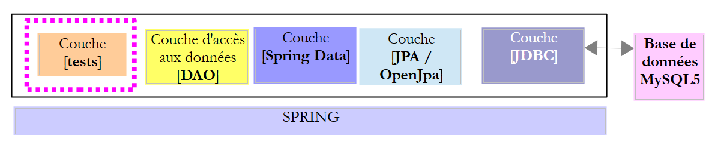 |
 |
Les tests ci-dessus sont identiques à ceux des implémentations Spring JDBC, Spring JPA Hibernate et Spring JPA EclipseLink. On se reportera aux pages suivantes si nécessaire :
- [JUnitTestCheckArguments] : paragraphe 4.11.1 ;
- [JUnitTestDao] : paragraphe 4.11.2 ;
- [JUnitTestPushTheLimits] : paragraphe 4.11.3 ;
- [JUnitTestProxies] : paragraphe 6.4.5 ;
Les configuration d'exécution à utiliser sont les suivantes :
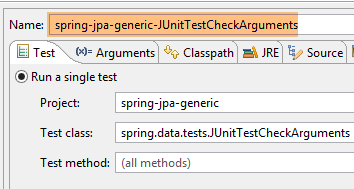 | 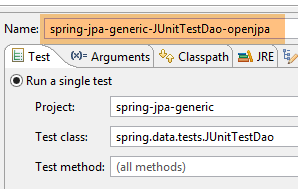 |
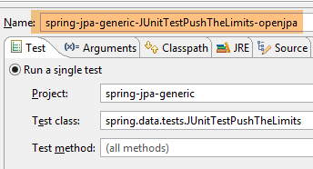 | 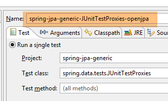 |
Pour que les entités JPA soient enrichies (woven) par OpenJpa, il faut que les applications Java ou les tests JUnit soient lancés avec un agent Java. Celui-ci va enrichir les entités JPA avant que celles-ci ne soient chargées par la JVM [http://openjpa.apache.org/builds/1.2.3/apache-openjpa/docs/ref_guide_pc_enhance.html]. Regardons par exemple, la configuration du test [JUnitTestDao] :
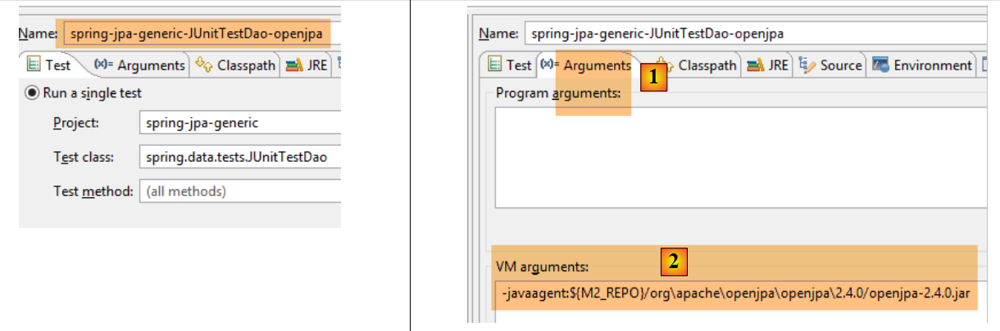 |
- dans l'onglet [Arguments] [1], on donne la référence de l'agent Java à la JVM selon la syntaxe [2]. L'agent Java est l'archive [openjpa-<version>.jar] qu'on trouve dans le dossier [<m2-repo>/org/apache/openjpa/<version>]. Le dossier <m2-repo> est indiqué dans la configuration d'Eclipse ([3] ci-dessous) :
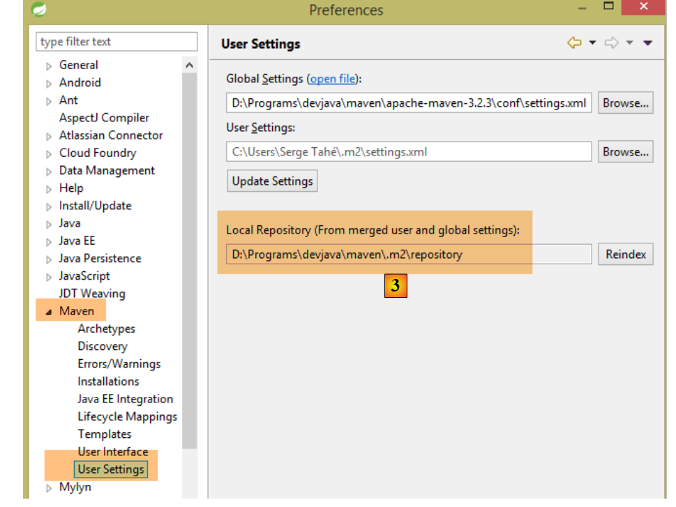 |
En [2], ci-dessus, on a utilisé une variable [M2_REPO] définie par l'utilisateur :
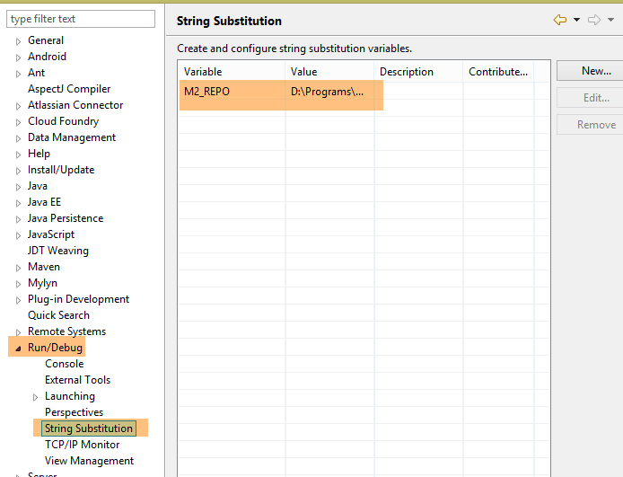 |
On a donné à la variable [M2_REPO] la valeur visible en [3].
Les résultats obtenus pour les tests [JUnitTestDao] et [JUnitTestPushTheLimits] sont les suivants :
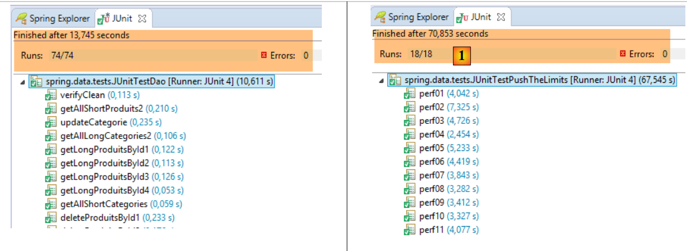 |
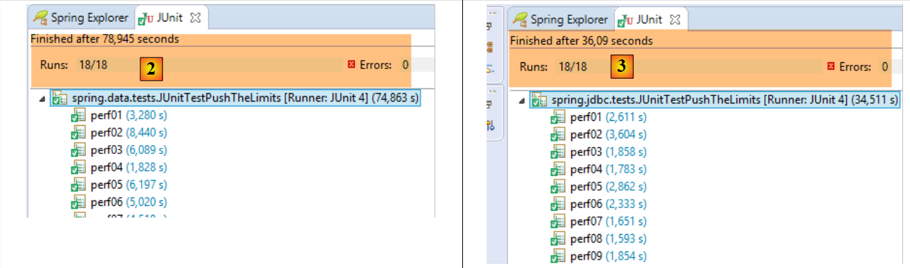 |
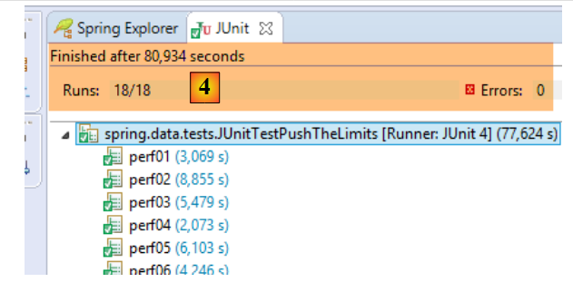 |
- en [1], [JUnitTestPushTheLimits-EclipseLink] : 70,583 s ;
- en [2], [JUnitTestPushTheLimits-Hibernate] : 78,945 s ;
- en [3], [JUnitTestPushTheLimits-JDBC] : 36,09 s ;
- en [4], [JUnitTestPushTheLimits-OpenJpa] : 80,394 s ;
Les résultats console obtenus pour le test [JUnitTestProxies] sont les suivants :
On voit ici, que lorsqu'on accède au champ [Categorie.produits] d'une catégorie de type PROXY et au champ [Produit.categorie] d'un produit de type PROXY, on a un pointeur null dans les deux cas (lignes 7 et 17).